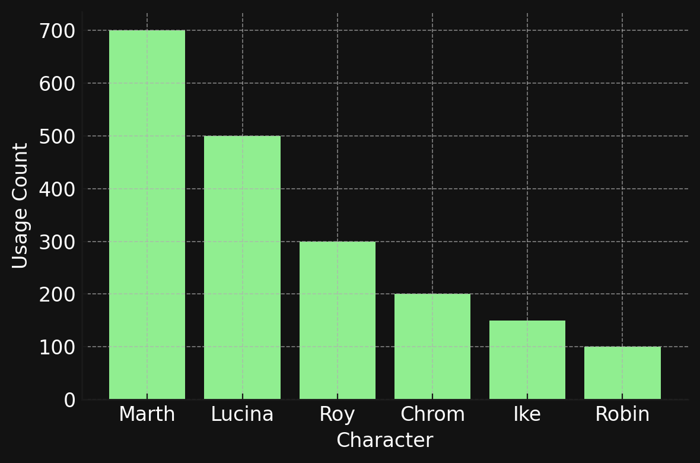
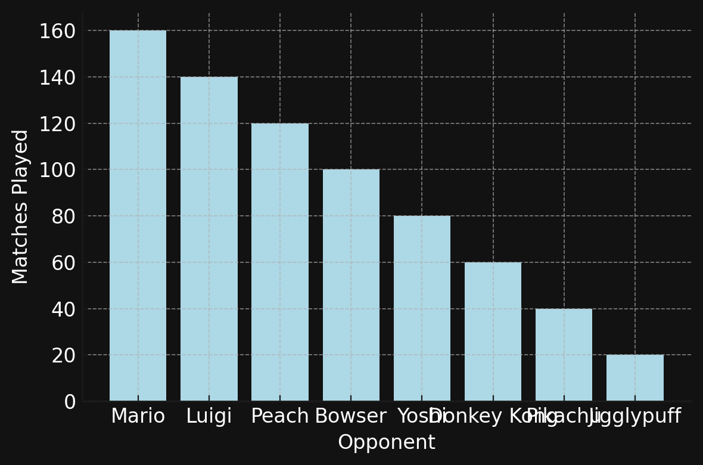
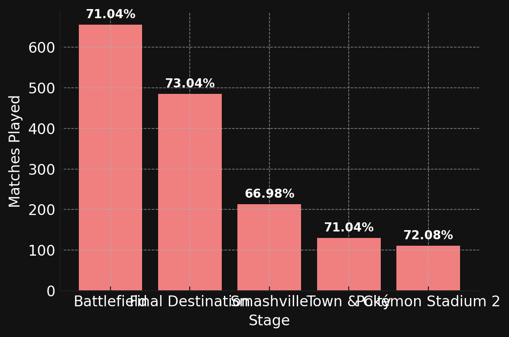

Nairo - Player Stats
Win Rate
Characters Used
Opponents
Common Stages
Stage Performance
- Most Common Starter: Pokémon Stadium 2 (Picked: 51.00%)
- Preferred Counterpick: Town & City (Picked: 11.22%)
- Best Stage (Win %): Yoshi's Island (Win Rate: 100.00%)
- Worst Stage (Win %): Castle Siege (Win Rate: 0.00%)